Anii 1990-2000
1990 a fost un deceniu de inovație în jocurile video. A fost un deceniu de tranziție de la grafica raster la grafica 3D și a dat naștere mai multor genuri de jocuri video, inclusiv first-person shooter, strategie în timp real și MMO. Jocurile portabile devin mai populare de-a lungul deceniului, mulțumită parțial lansării Game Boy în 1989. Jocurile arcade au cunoscut o renaștere la începutul și mijlocul anilor 1990, urmată de un declin la sfârșitul anilor 1990, pe măsură ce consolele de acasă au devenit mai comune.
Cu toate acestea, pe măsură ce jocurile arcade au intrat în declin, industria jocurilor video de acasă s-a maturizat într-o formă mai populară de divertisment în anii 1990, dar și jocurile lor video au devenit tot mai controversate din cauza naturii lor violente, în special în jocurile Mortal Kombat, Night Trap, și Doom, ceea ce a condus la formarea Asociației Interactive Digital Software și a jocurilor lor de evaluare, prin semnarea evaluărilor lor ESRB din 1994. Evoluțiile majore din anii 1990 includ popularizarea graficii 3D pe computer folosind poligoane (inițial în arcade, urmate de console și computere de casă) și începutul unei consolidări mai mari a editorilor, jocuri cu buget mai mare, dimensiunea crescută a echipelor de producție și colaborări cu atât industria muzicală, cât și industria cinematografică. Exemple în acest sens includ implicarea lui Mark Hamill în Wing Commander III, introducerea QSound cu plăci de sistem arcade precum CP System II de la Capcom și bugetele mari de producție ale jocurilor precum Final Fantasy VII de la Squaresoft și Shenmue de la Sega.
| 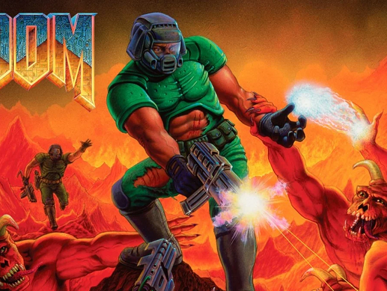 | 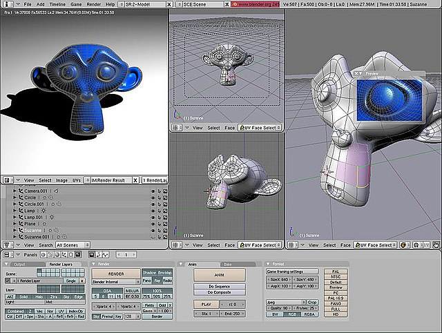 |
Trecerea la medii optice Înainte de anii 1990, unele jocuri arcade au explorat utilizarea discurilor laser, cea mai notabilă fiind Dragon's Lair în 1983. Aceste jocuri sunt considerate filme interactive și foloseau video cu mișcare completă de pe discul laser, determinând jucătorul să răspundă prin comenzi la momentul potrivit. pentru a continua jocul. În timp ce aceste jocuri erau populare la începutul anilor 1980, costul prohibitiv al tehnologiei laserdisc la acea vreme le-a limitat succesul. Când tehnologia media optică sa maturizat și a scăzut prețul în anii 1990, au apărut noi jocuri arcade cu laserdisc, cum ar fi Mad Dog McCree în 1990. Pioneer Corporation a lansat consola de jocuri LaserActive în 1993 care folosea doar discuri laser, cu un preț de bază al consolei de 1.000 USD și la reducere la 600 USD. Consola nu a avut rezultate bune. |
Introducerea graficii 3D
Pe lângă tranziția către mediile optice, industria în ansamblu a avut o schimbare majoră către grafica de computer 3D în timp real pe parcursul anilor 1990. Au existat o serie de jocuri arcade care au folosit grafică vectorială simplă pentru a simula 3D, cum ar fi Battlezone, Tempest și Star Wars. O provocare unică în grafica 3D pe computer este că randarea în timp real necesită de obicei calcule cu virgulă, pentru care până în anii 1990, majoritatea hardware-ului pentru jocuri video nu era potrivit. În schimb, multe jocuri simulau efecte 3D, cum ar fi utilizarea redării paralax a diferitelor straturi de fundal, redimensionare sprite-urilor pe măsură ce se deplasau spre vederea jucătorului sau alte metode de randare, cum ar fi Modul 7 al SNES. Aceste trucuri pentru a simula redarea 3D graficele prin sisteme 2D sunt denumite în general grafică 2.5D.
Redarea 3D în timp real, folosind poligoane, a fost în curând popularizată de jocurile Sega AM2 ale lui Yu Suzuki, Virtua Racing (1992) și Virtua Fighter (1993), ambele rulând pe placa de sistem arcade Sega Model 1; unele dintre Sony Computer Entertainment (Personalul SCE) implicat în crearea consolei originale de jocuri video PlayStation îl merită pe Virtua Fighter ca inspirație pentru hardware-ul grafic 3D al PlayStation. Potrivit fostului producător de la SCE Ryoji Akagawa și președintelui Shigeo Maruyama, PlayStation a fost considerată inițial ca un hardware axat pe 2D și abia după succesul Virtua Fighter în arcade au decis să proiecteze PlayStation ca un dispozitiv 3D. Maparea texturii și filtrarea texturii au fost popularizate în curând prin jocurile de curse și lupte 3D.
| 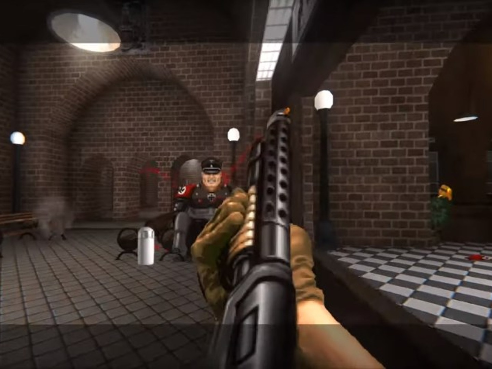 | 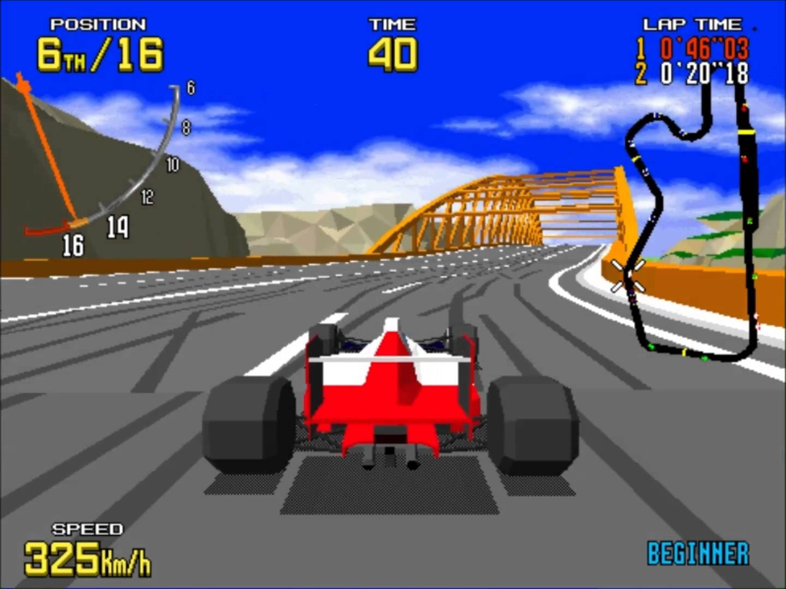 |
Console pe 32 și 64 de biți
Introducerea de către Sony a primei PlayStation în 1994 a inhibat atât războiul consolelor Nintendo, cât și al Sega și a îngreunat intrarea noilor companii pe piață. PlayStation a adus nu numai revoluția în mediile CD-ROM, ci și suport încorporat pentru redarea grafică 3D poligonală. Atari a încercat să reintre pe piață cu Atari Jaguar pe 32 de biți în 1993, dar nu avea bibliotecile de jocuri oferite de Nintendo, Sega sau Sony. Compania 3DO a lansat 3DO Interactive Multiplayer în 1993, dar a suferit și de un preț mai mare în comparație cu alte console de pe piață. Sega a pus foarte mult accent pe Sega Saturn pe 32 de biți, lansat în 1994, pentru a urma Genesis și, deși inițial s-a descurcat bine în vânzări cu PlayStation, în curând a pierdut teren în fața gamei mai mari de jocuri populare de pe PlayStation. Următoarea consolă Nintendo după SNES a fost Nintendo 64, o consolă pe 64 de biți cu suport pentru randarea 3D poligonală. Cu toate acestea, Nintendo a optat să continue să folosească formatul de cartuş ROM, ceea ce a făcut-o să piardă vânzările faţă de PlayStation, permiţând Sony să devină jucătorul dominant pe piaţa consolelor până în 2000.
Final Fantasy VII, așa cum a fost descris anterior, a fost un titlu de referință în industrie și a introdus conceptul de jocuri de rol jucătorilor de pe consolă. Originea jocurilor video muzicale a apărut odată cu jocul PlayStation PaRappa the Rapper în 1997, împreună cu succesul jocurilor arcade precum beatmania și Dance Dance Revolution. Resident Evil și Silent Hill au format baza genului actual de supraviețuire horror. Nintendo a avut propriile succese critice cu GoldenEye 007 de la Rare, primul first-person shooter pentru o consolă care a introdus funcții de bază pentru gen, și The Legend of Zelda: Ocarina of Time, unul dintre cele mai apreciate jocuri din toate timpurile.
 |
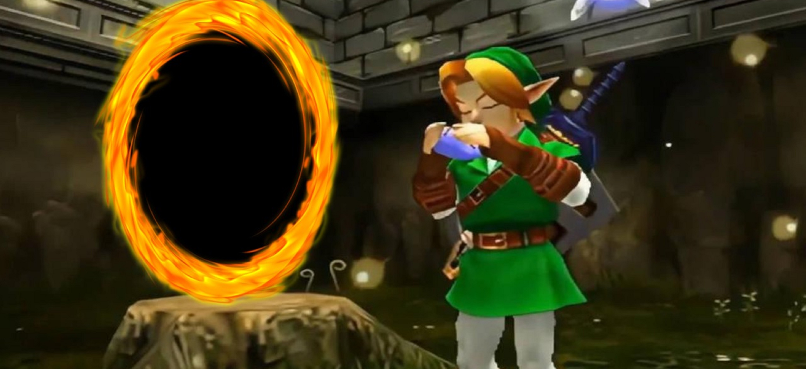 |
Handheld-urile devin majore
În 1989, Nintendo a lansat Game Boy pe bază de cartuș, prima consolă de jocuri portabilă importantă de la Microvision cu zece ani înainte. Inclus în sistem a fost Tetris, care a devenit unul dintre cele mai bine vândute jocuri video din toate timpurile, atrăgând multe persoane care nu ar juca în mod normal jocuri video. Mai multe handheld-uri rivale și-au făcut debutul la începutul anilor 1990, inclusiv Sega Game Gear și Atari Lynx (primul handheld cu afișaj LCD). Deși aceste sisteme erau mai avansate din punct de vedere tehnologic și destinate să se potrivească cu performanța consolelor de acasă, ele au fost împiedicate de un consum mai mare de baterie și de mai puțin suport pentru dezvoltatorii independenți. În timp ce unele dintre celelalte sisteme au rămas în producție până la mijlocul anilor 1990, Game Boy și încarnările sale succesive, Game Boy Pocket, Game Boy Color și Game Boy Advance, au fost practic necontestate pentru dominația pe piața portabile prin anii 1990. Familia Game Boy a introdus și primele tranșe din seria Pokémon cu Pokémon Red and Blue, care rămâne una dintre cele mai bine vândute francize de jocuri video pentru Nintendo.
| 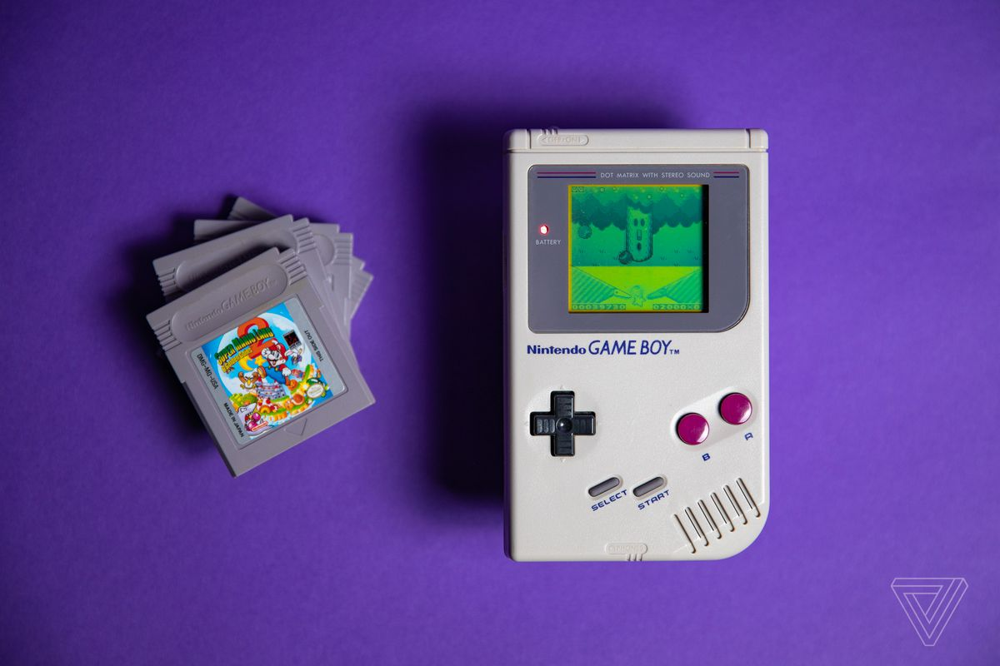 | 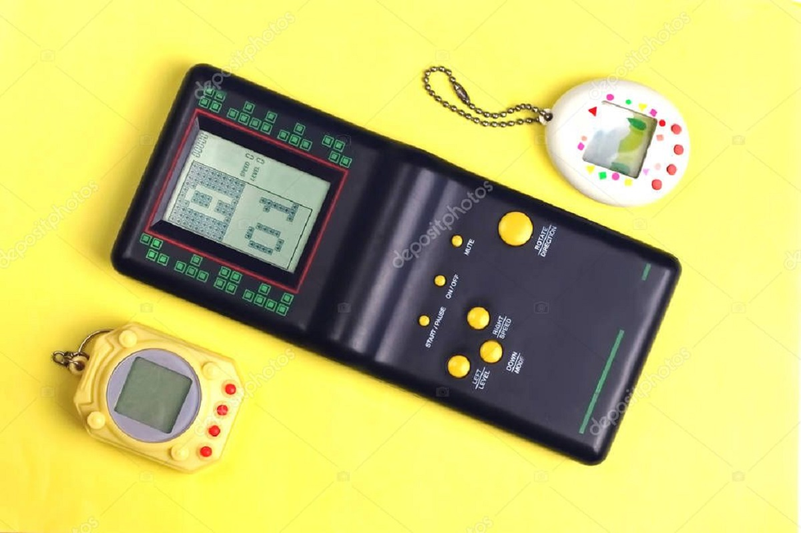 | 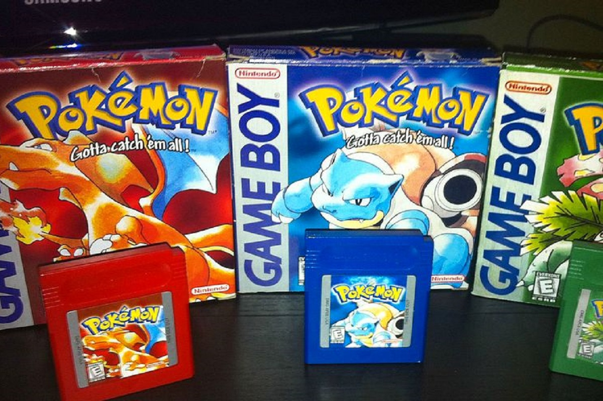 |
Jocurile pe calculator
În această perioadă au fost stabilite mai multe genuri cheie. Wolfenstein 3D și Doom sunt jocurile formative ale first-person shooter (FPS). Jocurile grafice de aventură au devenit proeminente în această perioadă; inclusiv Myst și The 7th Guest, mai multe dintre jocurile de aventură LucasArts, inclusiv seria Monkey Island. Cu toate acestea, genul jocurilor de aventură a fost considerat mort până la sfârșitul anilor 1990 din cauza popularității în creștere a FPS-urilor și a altor genuri de acțiune. Primele sim-uri imersive, jocuri care au oferit jucătorului mai multă acțiune și opțiuni prin sisteme de joc flexibile, au apărut după ascensiunea jocurilor FPS, cu jocuri precum Ultima Underworld: The Stygian Abyss și Thief: The Dark Project. Thief a extins, de asemenea, ideea de jocuri stealth și a creat ideea de jocuri „first person sneaker” în care lupta era mai puțin concentrată.
Jocurile de strategie în timp real au crescut și ele în popularitate în anii 1990, cu jocurile fundamentale Dune II, Warcraft: Orcs & Humans și Command & Conquer. Primele jocuri de strategie 4X (prescurtare de la „Explore, Expand, Exploit, Exterminate”) au apărut și ele în acest deceniu, popularizate de Sid Meyer's Civilization în 1991. Alone in the Dark în 1992 a stabilit multe elemente ale genului survival horror care erau în jocul de consolă Resident Evil. Jocurile de simulare au devenit populare, inclusiv cele de la Maxis începând cu SimCity în 1989 și care au culminat cu The Sims, care a fost lansat pentru prima dată la începutul anului 2000.
Conectivitatea online în jocurile pe calculator a devenit din ce în ce mai importantă. Bazându-se pe popularitatea tot mai mare a MUD-urilor bazate pe text din anii 1980, MUD-urile grafice precum Habitat au folosit interfețe grafice simple alături de text pentru a vizualiza experiența jocului. Primele jocuri roleplay online cu multiplayer masiv au adaptat noua abordare grafică 3D pentru a crea lumi virtuale pe ecran, începând cu Meridian 59 în 1996 și popularizate prin succesul Ultima Online în 1997 și EverQuest și Asheron's Call în 1999. De asemenea, conectivul online a devenit important în genuri precum FPS și RTS, permițând jucătorilor să se conecteze la adversari umani prin telefon și conexiune la internet. Unele companii au creat aplicații pentru a ajuta la conectivitate, cum ar fi Battle.net de la Blizzard Entertainment.
| 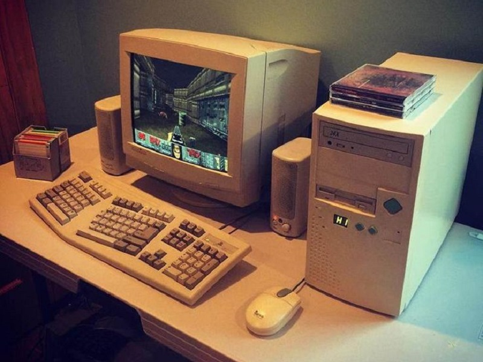 | 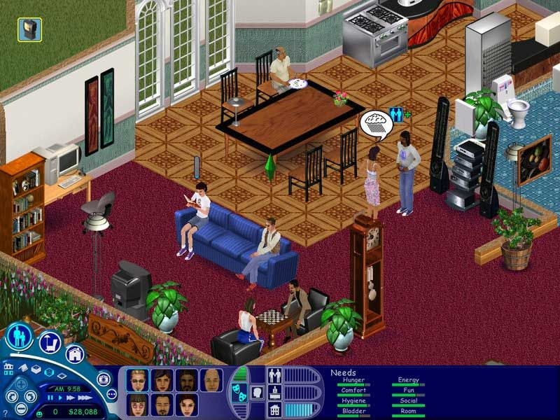 | 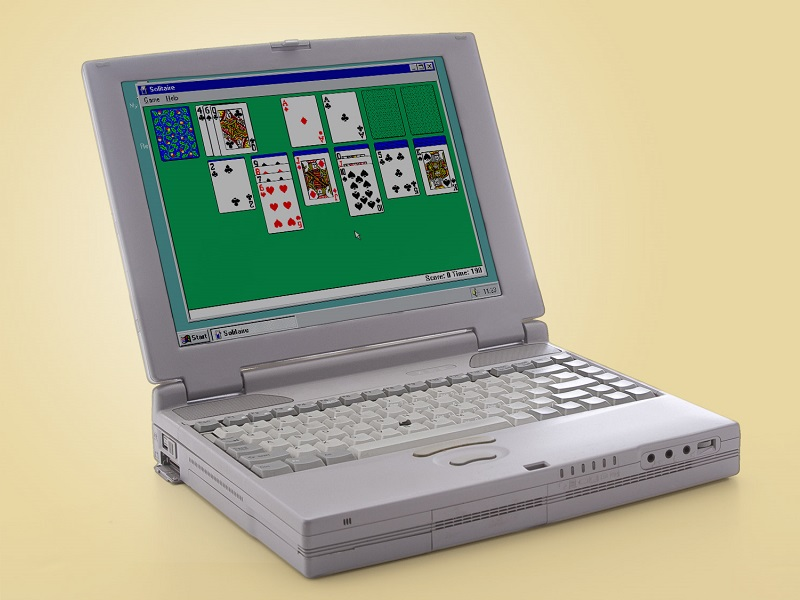 | 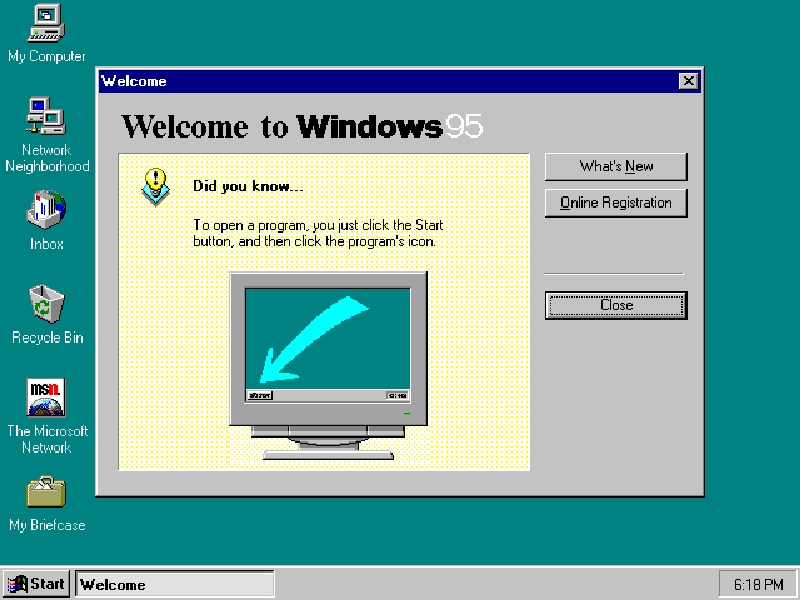 |
În anii 1990, Microsoft a introdus versiunile sale inițiale ale sistemului de operare Microsoft Windows pentru computere personale, o interfață grafică de utilizator menită să înlocuiască MS-DOS. Dezvoltatorii de jocuri le-a fost dificil să programeze pentru unele dintre versiunile anterioare de Windows, deoarece sistemul de operare tindea să le blocheze accesul programatic la dispozitivele de intrare și ieșire. Microsoft a dezvoltat DirectX în 1995, integrat ulterior în Microsoft Windows 95 și viitoarele produse Windows, ca un set de biblioteci pentru a oferi programatorilor de jocuri acces direct la aceste funcții. Acest lucru a ajutat, de asemenea, la furnizarea unei interfețe standard pentru a normaliza gama largă de plăci grafice și de sunet disponibile pentru computerele personale până în acest moment, ajutând și mai mult la dezvoltarea continuă a jocului.